India's Battery Energy Storage System (BESS) market stands at a critical juncture, with explosive growth projections but fundamental infrastructure gaps that threaten to derail the nation's renewable energy ambitions. While the market is set to expand from $7.8 billion in 2024 to $32 billion by 2030, the country faces a staggering deployment gap of 99.8% to meet its 2031-32 targets. This newsletter examines the critical missing pieces in India's BESS infrastructure and the path forward for sustainable energy storage deployment.
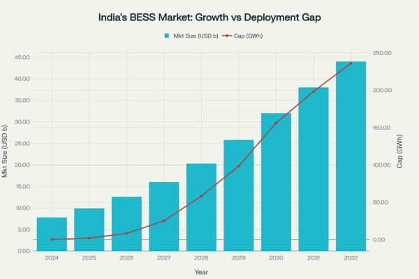
Market Dynamics and Growth Trajectory
India's BESS market is experiencing unprecedented momentum, driven by ambitious renewable energy targets and supportive government policies. The market achieved a remarkable 600% growth in 2024, with 341 MWh of new capacity additions compared to just 51 MWh in 2023. However, this growth trajectory, while impressive, falls far short of the scale required to meet national energy storage obligations.
The Central Electricity Authority projects India will need 236.22 GWh of BESS capacity by 2031-32, representing a 573-fold increase from current installed capacity of 442 MWh. This massive deployment gap requires sustained annual growth rates of over 145% - a challenging target that exposes critical infrastructure deficiencies.
Recent policy interventions demonstrate government commitment to bridging this gap. The Ministry of Power approved an expanded Viability Gap Funding (VGF) scheme for 30 GWh of BESS capacity, involving Rs 5,400 crore in funding and attracting Rs 33,000 crore in investment. Additionally, the waiver of Inter-State Transmission System (ISTS) charges for storage projects until June 2028 provides crucial financial relief.
Critical Infrastructure Gaps
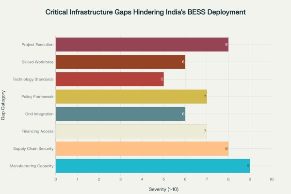
Manufacturing Capacity Constraints
India's most pressing challenge lies in domestic manufacturing capacity limitations. The country imports approximately 75-80% of lithium-ion cells, which account for the majority of battery costs. Current domestic battery manufacturing capacity stands at only 18 GWh, with projections indicating that just 13% of total battery cell demand will be sourced domestically by 2030.
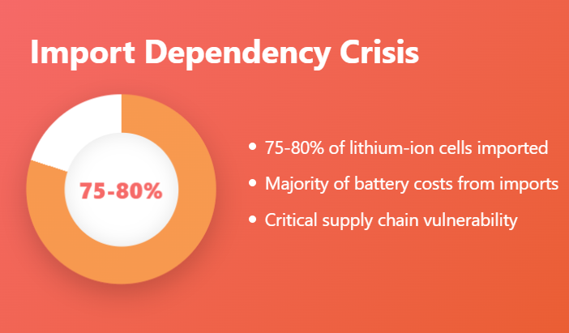
The Production Linked Incentive (PLI) scheme for Advanced Chemistry Cell battery storage has allocated 50 GWh of manufacturing capacity, with 30 GWh awarded to companies including Reliance Energy , Ola Electric , and Rajesh Exports Limited (Rel) Bangalore . However, progress toward establishing large-scale production remains sluggish, with most companies focusing on battery pack assembly rather than cell manufacturing.
Recent developments show promise, with facilities like Pace Digitek 's 5 GWh annual capacity plant in Bengaluru and Cygni Energy 's 4.8 GWh assembly plant in Hyderabad. However, these initiatives remain insufficient to meet the projected demand surge.
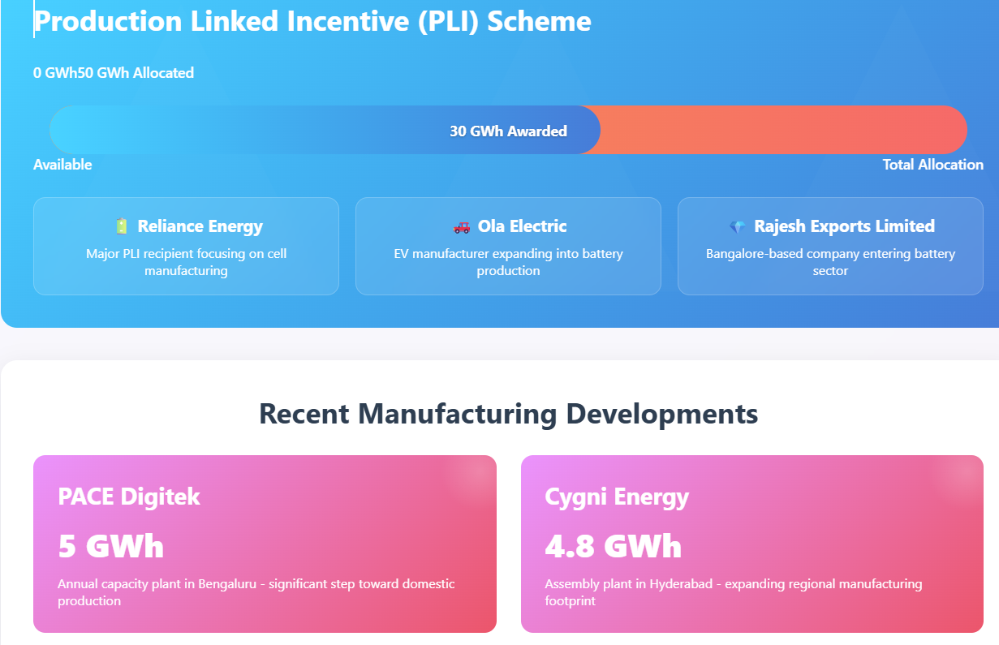
Supply Chain Vulnerabilities
India's heavy reliance on critical mineral imports poses significant supply chain risks. The country imports virtually all lithium, cobalt, nickel, and graphite required for battery production, exposing the domestic industry to price volatility and geopolitical risks. China's recent export restrictions on battery-grade graphite underscore these vulnerabilities.
Limited vendor availability compounds these challenges, with only a handful of companies capable of executing gigawatt-hour scale projects. Most vendors operating in India are either overseas-based or operate through joint ventures with international partners. This concentration creates bottlenecks in project execution and limits competition.
Recent lithium discoveries in Jammu & Kashmir and Rajasthan offer long-term promise, but the absence of domestic refining infrastructure and failed auction attempts highlight the complexity of establishing a robust domestic supply chain.
Financing Barriers
High financing costs represent another critical bottleneck, with BESS projects in India facing capital costs nearly double those in advanced economies. The International Energy Agency notes that while battery storage investment in India is expected to surpass $1 billion in 2025, financing difficulties persist due to high costs and limited access to affordable capital.
The absence of BESS-specific financial products further constrains market development. Most financing institutions lack tailored loan products for energy storage systems, treating them as high-risk investments due to concerns over battery degradation and limited resale value. This financing gap particularly affects smaller developers and limits market participation.
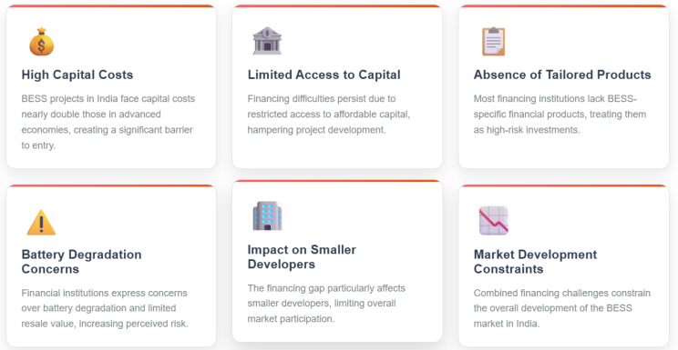
Grid Integration Challenges
Grid integration poses significant technical and regulatory challenges. India's transmission network faces growing complexity due to the integration of variable renewable energy sources, requiring sophisticated grid management capabilities. The intermittent nature of renewables creates system stability challenges that BESS can address, but inadequate transmission infrastructure limits deployment options.
Current grid infrastructure requires substantial upgrades to accommodate large-scale energy storage deployment. The draft National Electricity Plan estimates an addition of approximately 105,000 ckm of transmission lines and 595,000 MVA of transformation capacity from 2027 to 2032. These upgrades are essential for effective BESS integration but represent significant capital requirements.
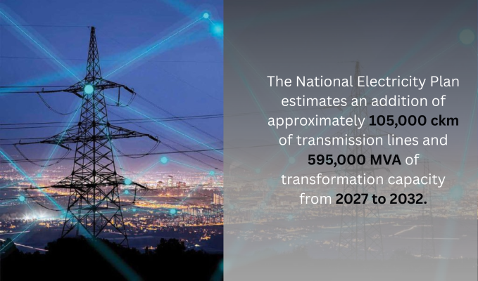
Policy and Regulatory Gaps
Despite recent policy initiatives, significant regulatory gaps persist. India's energy policy framework largely excludes energy storage from key programs, creating barriers for investment and deployment. The lack of comprehensive regulatory guidelines specific to energy storage systems creates uncertainty for investors and developers.
The National Renewable Energy Laboratory identifies that existing regulations limiting storage's ability to provide multiple services or earn revenue for those services present barriers to maximizing storage investment value. This regulatory environment reduces the economic viability of BESS projects and slows market development.
Safety standards tailored to India's tropical climate conditions remain underdeveloped. While the Central Electricity Authority has issued draft safety guidelines for BESS, the absence of climate-specific standards creates operational risks.
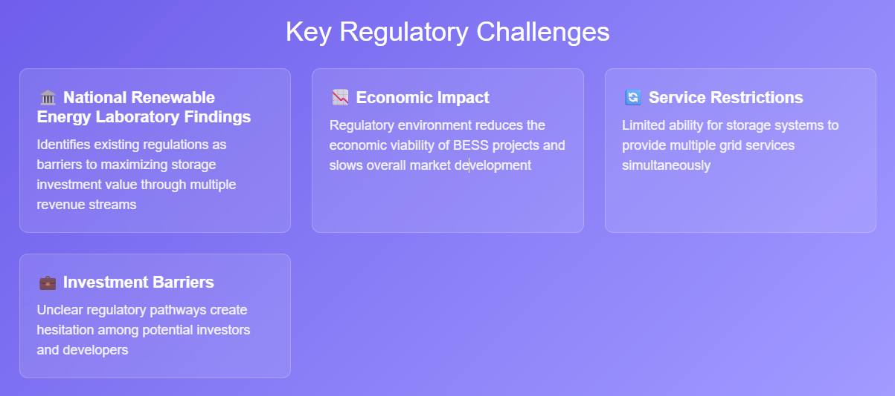
Technology and Standards Deficiencies
India lacks comprehensive technical standards specifically designed for tropical climate conditions. Current standards adopted from international organizations may not adequately address humidity, temperature extremes, and other environmental factors prevalent in India. This gap creates potential safety and performance issues that could undermine BESS deployment.
The dominance of lithium-ion technology, while offering performance advantages, creates dependency on imported materials and technologies. Alternative technologies like sodium-ion batteries, which could leverage India's abundant sodium resources, lack dedicated policy support and funding.
Workforce and Skills Gaps
Limited skilled labor availability across the BESS value chain represents a critical constraint. Industry stakeholders report shortages in skilled personnel for battery manufacturing, installation, and maintenance operations. This skills gap leads to project delays, safety concerns, and quality issues that affect overall market development.
The nascent stage of India's battery manufacturing ecosystem means limited availability of experienced professionals in cell manufacturing, battery management systems, and grid integration technologies. Addressing this requires comprehensive training programs and educational initiatives.
Project Execution Challenges
Project execution delays and cancellations pose significant challenges to market development. Over 6.4 GW of awarded BESS capacity has been cancelled due to delays in power purchase agreements and expectations of further tariff reductions. These cancellations reflect broader market uncertainty and contracting difficulties.
The lengthy gestation period for pumped hydro storage projects, often exceeding 10 years, contrasts sharply with tender timelines of just 2-3 years. This mismatch has led to numerous project cancellations and highlights the need for more realistic project planning and execution frameworks.
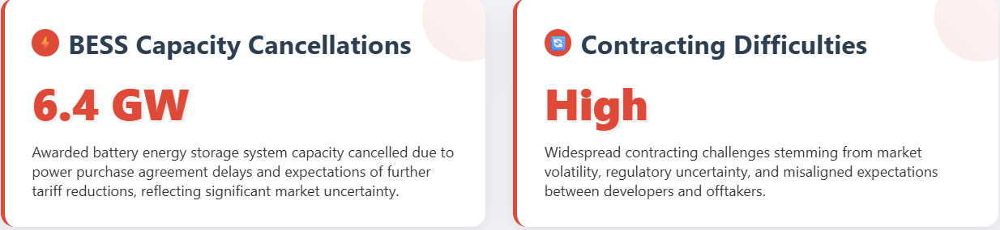
Path Forward: Bridging the Infrastructure Gaps
Immediate Actions Required
Manufacturing Scale-Up: Accelerate domestic cell manufacturing capacity through targeted incentives and streamlined approval processes. The government should fast-track PLI scheme implementation and provide additional support for equipment manufacturing and component localization.
Supply Chain Diversification: Develop strategic partnerships with mineral-rich countries and invest in domestic refining capabilities. The government's initiative through Khanij Bidesh Limited should be expanded to secure long-term mineral supplies.
Financing Innovation: Establish dedicated financial products for BESS projects, including concessional financing mechanisms and risk-sharing instruments. Development of green bonds and infrastructure investment trusts specifically for energy storage could unlock private capital.
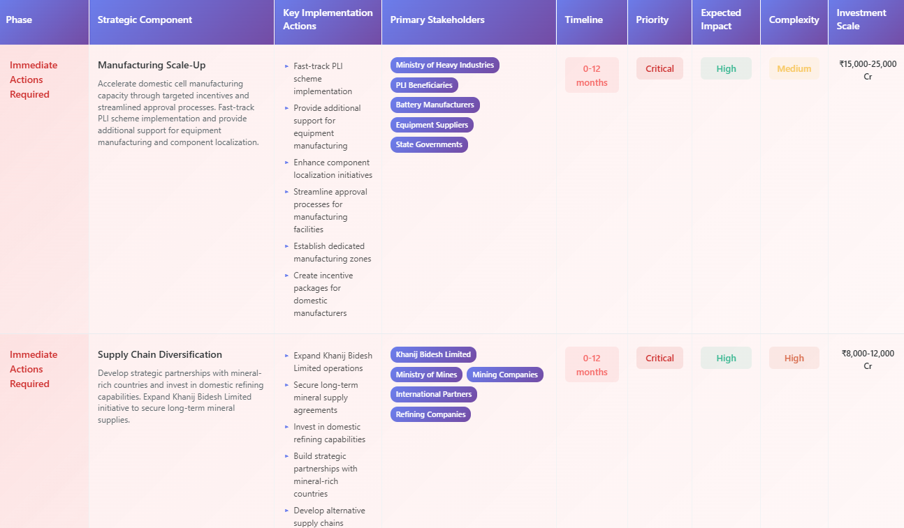
Medium-Term Strategies
Grid Infrastructure Enhancement: Invest in transmission network upgrades to support large-scale energy storage deployment. This includes developing smart grid capabilities and advanced grid management systems.
Regulatory Framework Development: Establish comprehensive regulatory guidelines for energy storage systems, including clear revenue mechanisms and market participation rules. This should include climate-specific safety standards and performance requirements.
Technology Diversification: Support research and development of alternative storage technologies suitable for Indian conditions. This includes sodium-ion batteries and other emerging technologies that could reduce import dependency.
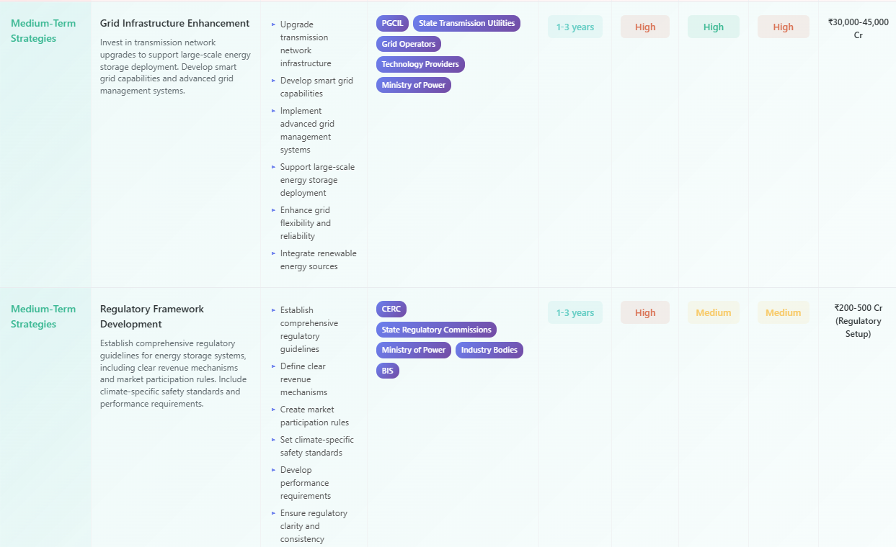
Long-Term Vision
Ecosystem Development: Build a comprehensive BESS ecosystem encompassing the entire value chain from raw materials to recycling. This requires coordinated policy support and industry collaboration.
Skills Development: Establish specialized training programs and educational initiatives to build a skilled workforce for the energy storage sector. This should include partnerships with technical institutions and industry associations.
Innovation Hubs: Create dedicated research and development centers focused on energy storage technologies adapted to Indian conditions. This includes developing indigenous solutions for tropical climate challenges.
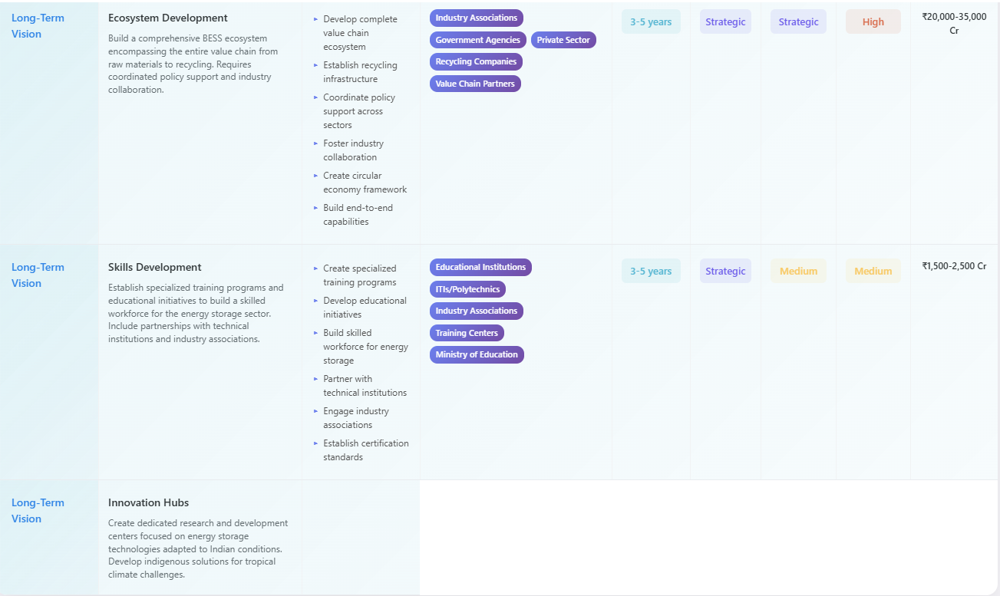
Conclusion
India's BESS infrastructure faces substantial gaps that threaten to derail the nation's renewable energy transition. While government policy support and market momentum provide a foundation for growth, addressing critical shortcomings in manufacturing capacity, supply chain security, financing access, and grid integration requires coordinated action across multiple stakeholders.